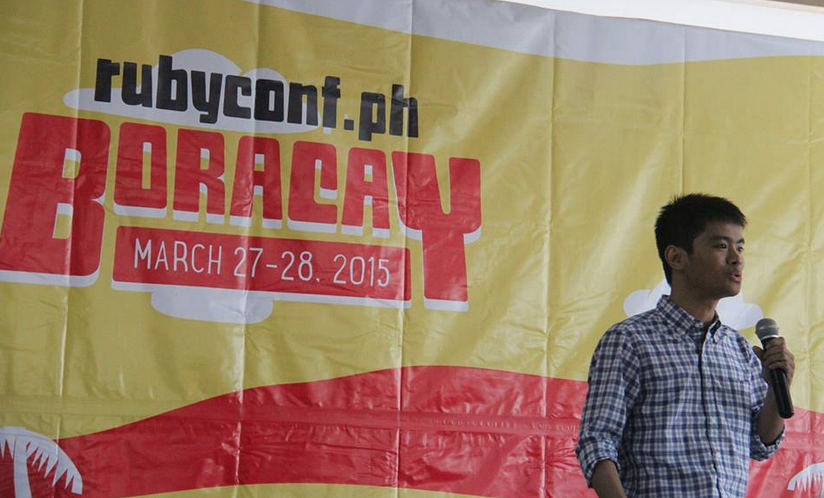
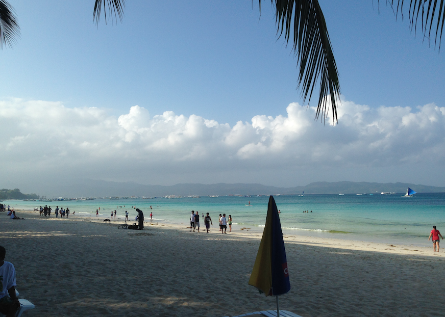
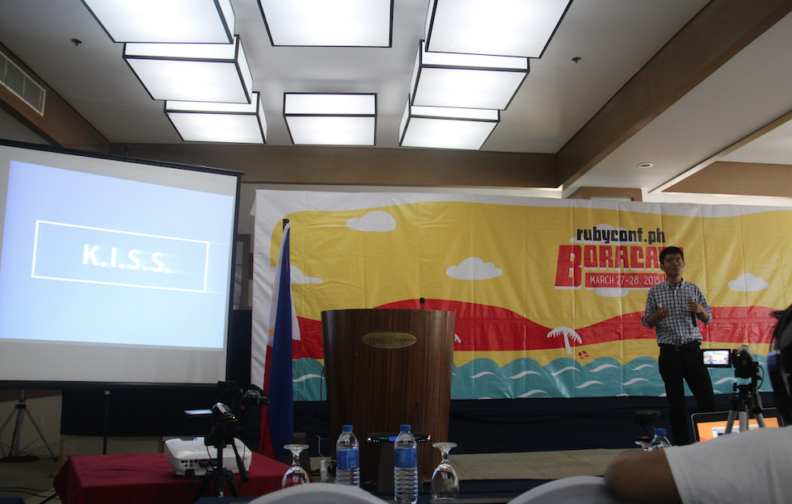
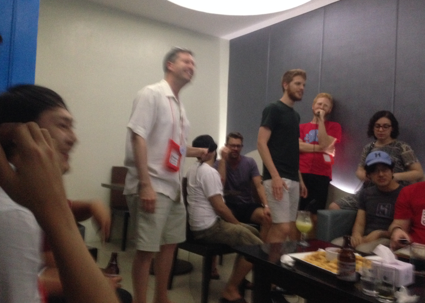
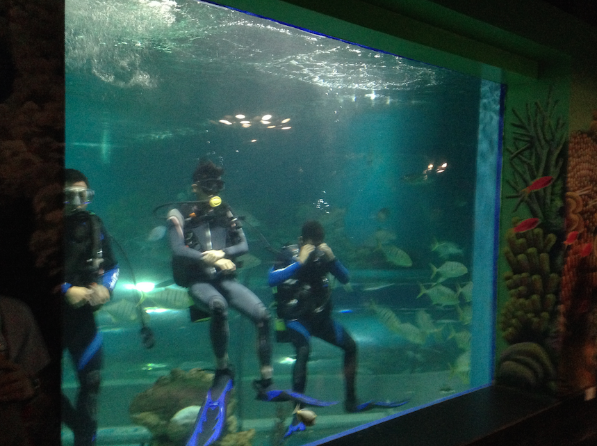

RubyConf Philippines 2015
A month ago, I went to Boracay to have some fun and join the other Rubyists in this year's Ruby Conference. I was given the opportunity to share what I have learned for the past couple of years as a Team Lead, Scrum Master, and Infrastructure Engineer.

It was great to see Boracay again. It was a good idea that the conference was held in a place where you can forget about work and have some fun.

My Topic: Getting that Rails Project to Launch on Time
My talk was about project management, web frameworks, site performance, infrastructure and security. I shared six of the most important lessons I learned during my professional life. I focused on what usually causes delays and what can be done to solve these problems.

I shared some of the differences of working with a team and working alone. I also shared my experience working with different frameworks (Rails, Sinatra, Cuba). I shared some techniques I use to estimate tasks properly.
After-party
After all the talks, we had some cool activities and drinking sessions. It was a nice experience to be with the other speakers. I learned a lot from my discussions with them since they all had tons of experience and they were all much older than me.

It was fun singing and drinking with the other speakers. To be honest, it was funny since we were all out of tune.

Overall, it was a great experience. I got to rest and relax for a bit. I got to meet a lot of awesome people and learn from them. I realized that I'm doing well right now but I still have a lot to learn before I can consider myself an awesome guy.